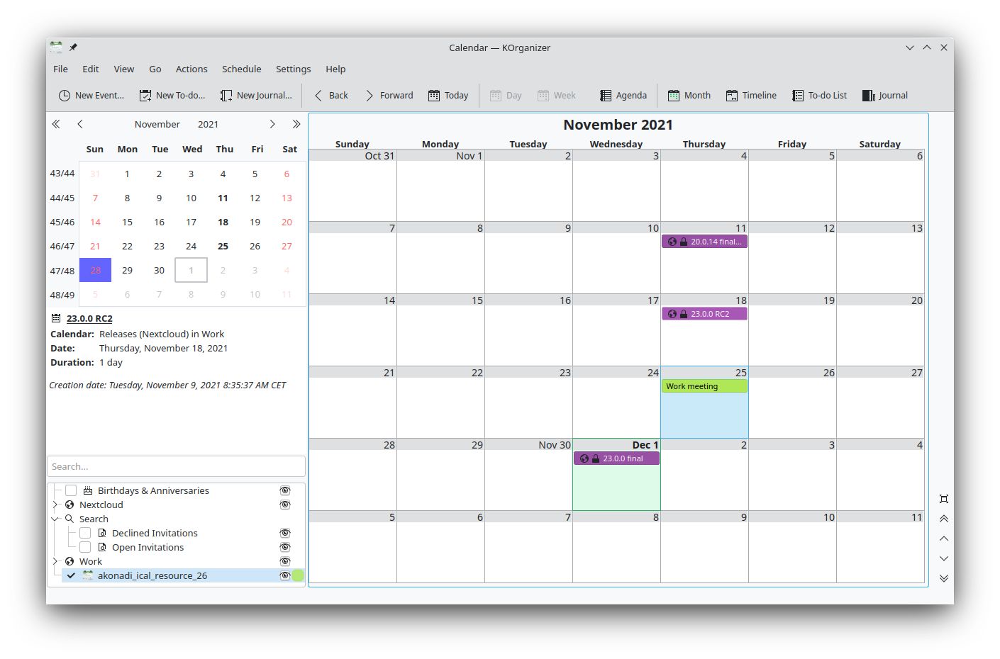
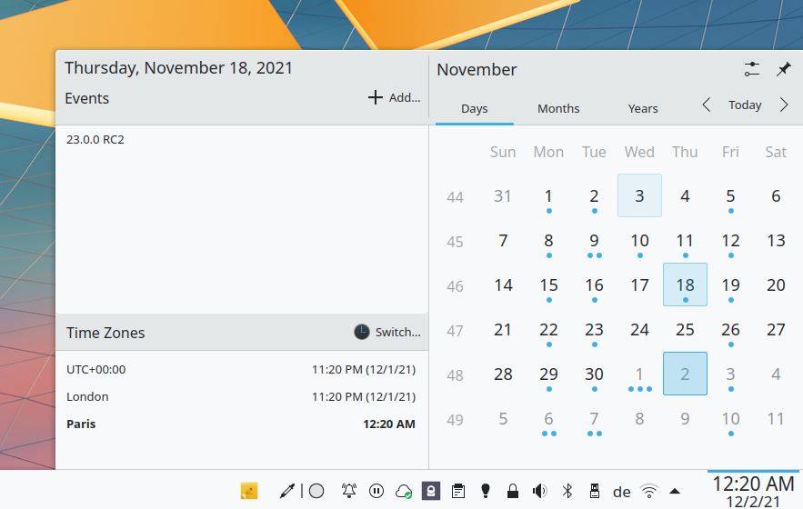

Sincronizando com o KDE Kontact
KOrganizer, Kalendar e KAddressBook podem sincronizar seu calendário, contatos e tarefas com um servidor Nextcloud.
Isso pode ser feito seguindo estes passos, dependendo se você usa o KOrganizer ou o Kalendar:
No KOrganizer:
Abra o KOrganizer e na lista de calendários (canto inferior esquerdo) clique com o botão direito e escolha `` Adicionar Calendário``:

Na lista de recursos resultante, selecione
DAV groupware resource:

No Calendário:
Abra o Kalendar e na barra de menu abra a configuração e então escolha
Fontes do Calendário->Adicionar Calendário:

Na lista de recursos resultante, selecione
DAV groupware resource:

No KOrganizer e no Kalendar:
Enter your username. As password, you need to generate an app-password/token (Learn more):

Escolha
Nextcloudcomo opção de servidor de Groupware:

Digite a URL do seu servidor Nextcloud e, se necessário, o caminho de instalação (qualquer coisa que vier depois do primeiro /, por exemplo `` mynextcloud`` em ``https://exampe.com/mynextcloud). Em seguida, clique em próximo:

Agora você pode testar a conexão, o que pode levar algum tempo para a conexão inicial. Se não funcionar, você pode voltar e tentar consertar com outras configurações:


Escolha um nome para este recurso, por exemplo
Trabalhoou `` Casa``. Por padrão, CalDAV (Calendário) e CardDAV (Contatos) são sincronizados:

Nota
Você pode definir uma taxa de atualização manual para seus recursos de calendário e contatos. Por padrão, essa configuração é definida para 5 minutos e deve ser adequada para a maioria dos casos de uso. Quando você cria um novo compromisso, ele é sincronizado com o Nextcloud imediatamente. Você pode querer alterar isso para economizar energia ou plano de dados do celular, para que possa atualizar com um clique com o botão direito do mouse no item da lista de calendário.
Após alguns segundos a minutos, dependendo da sua conexão com a Internet, você encontrará seus calendários e contatos dentro dos aplicativos KDE Kontact KOrganizer, Kalendar e KAddressBook, bem como o miniaplicativo de calendário Plasma:

